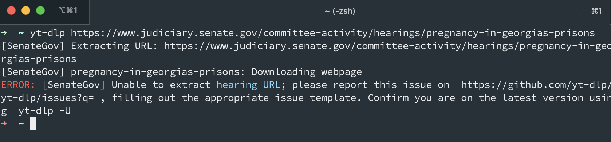
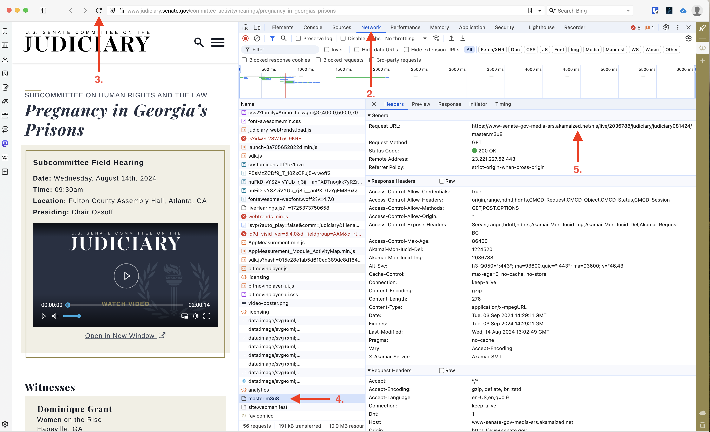

The problem
This past week one of my colleagues on the NPR investigations team needed to download a subcommittee hearing from the U.S Senate Committee on the Judiciary.
When downloading videos from youtube I always use the command line tool yt-dlp. Normally it is as simple typing the program’s name and the url of the video you are trying to download:
Terminal
yt-dlp https://www.youtube.com/watch?v=Tfe5kMbFGuEHowever the U.S Senate Committee on the Judiciary website makes things a bit more difficult. If we put in the url of the webpage that the video is located on we get the following error:

Let’s see how to grab the video off their website!
Download yt-dlp
First make sure you download yt-dlp. Thier github has instructions for any computer that you are, whether thats windows, mac, or linux.
Since I am on a mac I will use the homebrew package manager:
Terminal
brew install yt-dlpFinding the correct url
When websites play videos that they host on their own website, there will usually be a .m3u8 file. A M3U8 file is simply a text file that contains the location of files that your browser will stream1
To find the text file follow these steps:
- Open up your developer settings of your browser2
- Navigate to the
Networktab - Refresh the page
- Search for and then click the .m3u8 file
- Find the url that ends in .m3u8

In this case the url is:
https://www-senate-gov-media-srs.akamaized.net/hls/live/2036788/judiciary/judiciary102523p/master.m3u8
Remember how I said that a .m3u8 file is just a set of instructions and locations regarding a video? If you were to put the url into your browser it would download the file which looks like this:
#EXTM3U #EXT-X-VERSION:3 #EXT-X-INDEPENDENT-SEGMENTS #EXT-X-STREAM-INF:BANDWIDTH=712800,AVERAGE-BANDWIDTH=765600,CODECS=“avc1.4d401f,mp4a.40.2”,RESOLUTION=1280x720,FRAME-RATE=30.000,SUBTITLES=“subs” master/index_1.m3u8 #EXT-X-MEDIA:TYPE=SUBTITLES,NAME=“English”,DEFAULT=YES,AUTOSELECT=YES,FORCED=NO,LANGUAGE=“eng”,GROUP-ID=“subs”,URI=“master/text_1.m3u8”
Download the video
If we give yt-dlp the .m3u8 url it will download the video!
Terminal
yt-dlp https://www-senate-gov-media-srs.akamaized.net/hls/live/2036788/judiciary/judiciary102523p/master.m3u8Congrats the video has downloaded! If you are unsure the location the video was downloaded, just type the following into the terminal:
Terminal
open .Let me know if you have any questions!